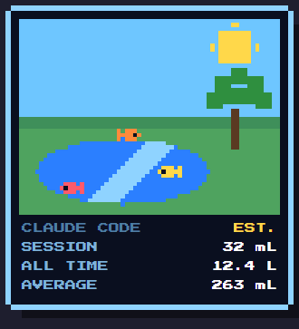
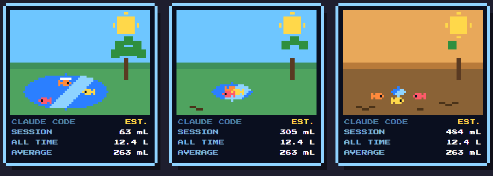
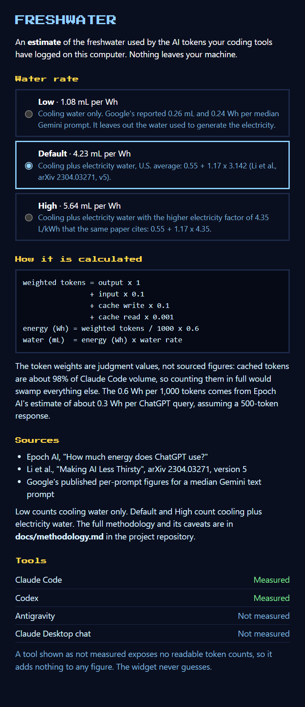

FRESHWATER
A small floating 8-bit widget that makes the cost of AI coding visible. It reads the token counts your coding tools already log on this computer and shows an estimate of the freshwater used — this session, all time, and on average.

WHAT IT LOOKS LIKE
The lake compares a session against your own average. Early on the fish swim and jump, in the middle the water pulls back and the sky turns hazy, and under heavy use the fish are stranded and flop on the mud. They never die. The figures shown here are made-up samples.

Early · middle · heavy use — the same widget, three sessions.

Click the figures on the widget to open the info panel — water rate presets, the formula, the sources, and each tool's status.
WHAT IS MEASURED
A tool shown as not measured adds nothing to any figure. The widget never guesses. If a log format changes and cannot be parsed, that tool is shown as not measured too.
| Tool | Source | Status |
|---|---|---|
| Claude Code (CLI and VS Code extension) | ~/.claude/projects/**/*.jsonl |
Measured |
| Codex | ~/.codex/sessions/**/*.jsonl |
Measured, for sessions that log an input/output split |
| Gemini CLI | ~/.gemini/tmp/<project>/chats/**/*.jsonl (honours GEMINI_CLI_HOME) |
Measured, not yet checked against a real install; old single-file .json sessions not read |
| Antigravity | ~/.gemini/antigravity/ |
Not measured — no readable token counts |
| Claude Desktop chat | none found | Not measured — no local logs |
THE FIGURE IS AN ESTIMATE
weighted tokens = output x 1 + input x 0.1 + cache write x 0.1 + cache read x 0.001 energy (Wh) = weighted tokens / 1000 x 0.6 water (mL) = energy (Wh) x water rate (mL per Wh)
- The token weights are judgment calls, not sourced figures. Cached tokens are about 98% of Claude Code volume, so counting them in full would swamp everything else.
- 0.6 Wh per 1,000 tokens comes from Epoch AI's estimate of about 0.3 Wh per ChatGPT query, assuming a 500-token response.
- The water rate has three presets, chosen in the info panel, following the formula in Li et al. (arXiv 2304.03271 v5):
water = energy x [cooling water + PUE x electricity water]. Low is 1.08 mL/Wh (cooling water only, from Google's per-prompt figures). Default is 4.23 mL/Wh (cooling + electricity water, the U.S. average in the paper). High is 5.64 mL/Wh (the same, with the paper's higher electricity factor). - This is a rough, order-of-magnitude figure, and the uncertainty runs in both directions. docs/methodology.md has the sources, a worked example, what could be wrong, and what is left out.
- The lake level compares a session against your own average: an average session leaves the lake half gone. Until you have 5 sessions it uses a baseline of 146 Wh per session (the mean of the author's own logs), so the lake looks the same whichever rate you choose.
PRIVACY
Nothing leaves your computer. The widget makes no network calls, has no accounts or telemetry, and bundles its own font. It reads only usage numbers and timestamps from the logs and never stores or shows conversation text. Per-session totals are kept in ~/.freshwater/ledger.json so that all-time figures survive tools deleting old logs. Settings are in ~/.freshwater/settings.json. The widget never limits or blocks token use.
INSTALL
You need Node.js 22 or newer. Windows, macOS and Linux are supported.
RUN FROM SOURCE
npm install npm start
To build an installer for the system you're on: npm run dist (Windows), npm run dist:mac, or npm run dist:linux. Output lands in dist/.
PLATFORM NOTES
- Windows is the most tested platform.
- macOS hides the Dock icon and floats the widget over fullscreen apps. The build is unsigned, so macOS will ask you to allow it.
- Linux needs a compositor for the transparent window. "Start at login" isn't offered — Electron can't set it there.
Right-click the widget for Info, Start at login (installed Windows/macOS builds), and Quit. Click the figures to open the info panel.
Browse installers on the Releases page →
Releases are published only from signed builds, so if a release isn't there yet, that's why.